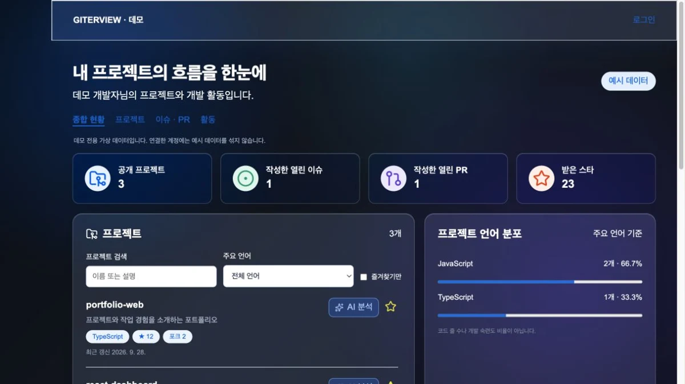

PERSONAL PROJECT · WEB APPLICATION
GITERVIEW
GitHub 프로젝트와 개발 활동을 한곳에 모은 사용자별 대시보드
역할 개인 프로젝트 · 화면 구성 및 프론트엔드 기능 구현

OVERVIEW
기존 Dashboard에서
사용자별 GitHub 대시보드로
기존의 로그인·계정 화면과 카드형 UI를 바탕으로, 사용자가 자신의 GitHub 계정을 연결하고 공개 저장소·이슈·PR·활동을 확인하는 서비스로 확장했습니다.
데모는 고정된 예시 데이터로 동작합니다. 계정 연결이나 개인정보 입력 없이 프로젝트 검색과 필터를 살펴볼 수 있습니다.
GITERVIEW 데모 열기 ↗01 / DATA & ERROR STATES
API 실패를 정상 데이터처럼
보이지 않게 하기
문제
실제 계정의 데이터 조회가 실패했을 때 예시 데이터를 대신 보여주면, 사용자는 자신의 정보가 정상적으로 조회됐다고 오해할 수 있습니다.
선택과 이유
실제 화면과 데모 화면을 명시적인 모드로 구분했습니다. 실제 요청을 시작할 때 기존 데이터를 비우고 요청 중 상태를 표시합니다. 실패하면 오류 메시지를 보여주고, 예시 데이터는 데모 경로에서만 불러옵니다.
현재 구현 결과
API 오류가 예시 데이터로 가려지지 않습니다. 즐겨찾기 역시 서버 응답을 받은 뒤 화면에 반영하며, 저장에 실패하면 오류 안내를 표시합니다. 데모에서 변경한 즐겨찾기는 현재 화면에서만 유지됩니다.
02 / AUTHENTICATION FLOW
사이트 로그인과
GitHub 연결을 구분하기
문제
사이트에 로그인하는 일과 외부 GitHub 계정을 연결하는 일은 다른 단계입니다. 연결 여부를 구분해야 각 사용자에게 필요한 다음 행동을 안내할 수 있습니다.
선택과 이유
React Router로 인증이 필요한 화면을 분리하고, 프론트엔드에 로그인 정보가 없으면 로그인 화면으로 이동시킵니다. GitHub 연결 요청과 콜백은 별도의 경로와 API 모듈로 분리했습니다.
현재 구현 결과
로그인, GitHub 연결, 데이터 조회를 순서대로 진행합니다. 프론트엔드의 화면 이동 제어와 서버의 API 인증은 각각 수행하며, 계정별 조회 흐름을 구분합니다.
03 / PROJECT EXPLORATION
필요한 저장소를 좁혀 보기
저장소 이름과 설명을 검색하고, 주요 언어와 즐겨찾기로 결과를 좁힙니다. 즐겨찾기는 실제 계정에서는 서버에 저장하고, 데모에서는 화면 상태만 바꿉니다.
서로 다른 조건을 하나의 필터 흐름에 적용해, 원본 목록을 유지하면서 필요한 결과를 표시하도록 구성했습니다.
NEXT STEPS
다음으로 보완할 점
TypeScript 전환, 프론트엔드 자동화 테스트, 성능 측정은 추가 개선 과제입니다. 데모 이미지에 표시된 저장소 수와 별 수는 서비스 성과가 아닌 예시 데이터입니다.